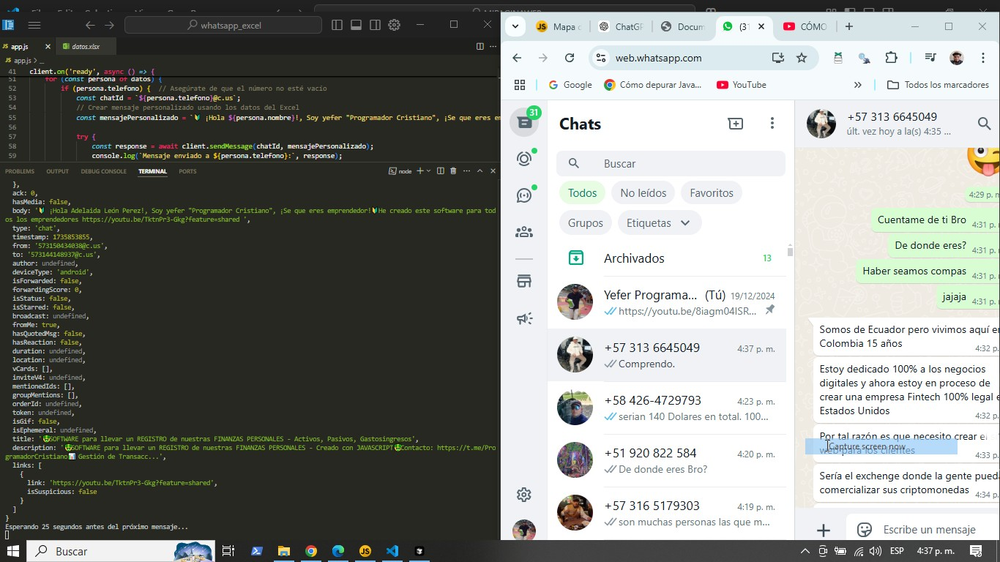
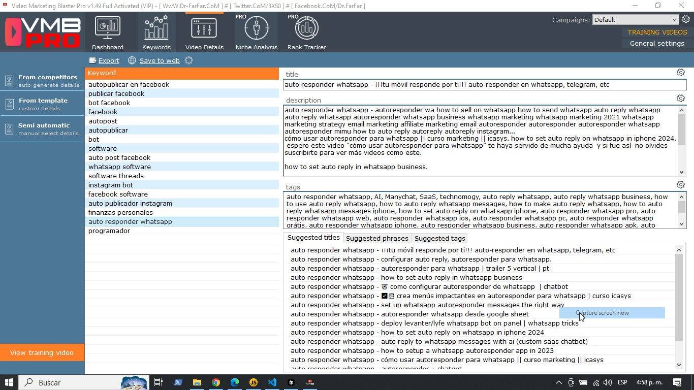

1. 🌐 Extrae Grupos de FB:
Permite extraer automáticamente diferentes grupos de Facebook donde el usuario este unido.
2. 🔑 Inicio de Sesión:
Inicia sesión en Facebook utilizando credenciales almacenadas de forma segura.
3. 📄 Lectura de Archivos:
Lee enlaces de grupos desde un archivo de texto (grupos.txt).
4. 📝 Publicación de Mensajes:
Publica mensajes predefinidos en los grupos seleccionados.
5. ⏳ Esperas Personalizadas:
Incluye pausas programadas para evitar bloqueos y asegurar que las publicaciones se realicen
correctamente.
6. ⚠️ Manejo de Errores:
Captura y maneja errores durante la ejecución, permitiendo continuar con otros grupos si ocurre un
problema.
7. ✅ Confirmación de Éxito:
Muestra un mensaje de éxito en la consola después de cada publicación exitosa.
8. 👁️ Interfaz Visual:
Utiliza Puppeteer para interactuar con la interfaz de Facebook de manera visual (modo no
encubierto).
9. ▶️ Ver Video Tutorial:Modo de Uso y de instalación.
×
Gestor de Grupos de Telegram
Características del software:
1. 📱 Interacción con Telegram:
Permite conectarse a la API de Telegram para gestionar grupos y usuarios.
2. 👥 Obtención de Miembros:
Extrae la lista de miembros activos de un grupo específico.
3. 🕒 Filtrado por Actividad:
Solo guarda usuarios que han estado activos en los últimos 8 días.
4. 📝 Guardado en Archivo:
Los usuarios activos se guardan en un archivo de texto para su posterior uso.
5. ➕ Agregar Miembros:
Permite agregar usuarios desde un archivo a un grupo de Telegram.
6. ⏳ Control de Tiempo:
Implementa pausas entre adiciones de usuarios para evitar restricciones de la API.
7. ⚠️ Manejo de Errores:
Captura y maneja errores comunes, como usuarios ya miembros o restricciones de privacidad.
8. 🔄 Uso de Librerías:
Utiliza librerías como Telethon y Pyrogram para facilitar la interacción con Telegram.
9. ▶️ Ver Video Tutorial:Modo de Uso y de Instalación.
×
AutoPost WhatsApp

Características del software:
1. 📱 Integración con WhatsApp:
Permite enviar mensajes personalizados a través de la API de WhatsApp, facilitando la comunicación
directa con los clientes.
2. 📊 Lectura de Archivos Excel:
Capacidad para leer datos de archivos Excel, lo que permite importar fácilmente listas de contactos
y mensajes.
3. ⏳ Retrasos Aleatorios:
Implementa tiempos de espera aleatorios entre el envío de mensajes, evitando bloqueos por parte de
WhatsApp y haciendo que la comunicación parezca más natural.
4. 🔄 Generación de Código QR:
Genera un código QR para facilitar la conexión y autenticación del cliente de WhatsApp.
5. 📩 Mensajes Personalizados:
Permite crear mensajes personalizados utilizando datos específicos de cada contacto, mejorando la
interacción con los usuarios.
6. 🔔 Escucha de Mensajes Entrantes:
Capacidad para escuchar y responder automáticamente a mensajes entrantes, como comandos específicos,
mejorando la interactividad.
7. 🚀 Modo Headless:
Funciona en modo headless (sin interfaz gráfica), lo que permite ejecutar el software en servidores
o entornos sin pantalla.
8. 🛠️ Manejo de Errores:
Incluye manejo de errores para asegurar que los problemas en el envío de mensajes sean registrados y
gestionados adecuadamente.
9. ▶️ Ver Video Tutorial:Modo de Uso y de instalación.
×
Posicionador de Videos para YouTube

Características del software:
1. 🎯 Optimización Automática:
El software optimiza tus videos automáticamente para maximizar su alcance y visibilidad en plataformas como YouTube.
2. 🧩 Palabras Clave Inteligentes:
Te ayuda a encontrar las mejores palabras clave para tu video, asegurando que tu contenido sea encontrado por más personas.
3. ⚡ Crecimiento Rápido:
Aumenta la visibilidad de tus videos rápidamente mediante el uso de técnicas avanzadas de SEO.
4. 🛠 Fácil de Usar:
Con una interfaz amigable, es fácil de usar incluso para quienes no tienen experiencia en marketing digital.
5. 🕵️♂️ Análisis Competitivo:
Permite analizar a la competencia para descubrir sus estrategias y mejorar las propias.
6. 📈 Informe de Resultados:
Proporciona reportes detallados sobre el rendimiento de tus videos, lo que te permite ajustar tu estrategia.
7. 🔄 Actualización Constante:
Se actualiza regularmente para adaptarse a los cambios del algoritmo de YouTube y las nuevas tendencias del mercado.
8. ▶️ Ver Video Tutorial:Modo de Uso y de instalación.